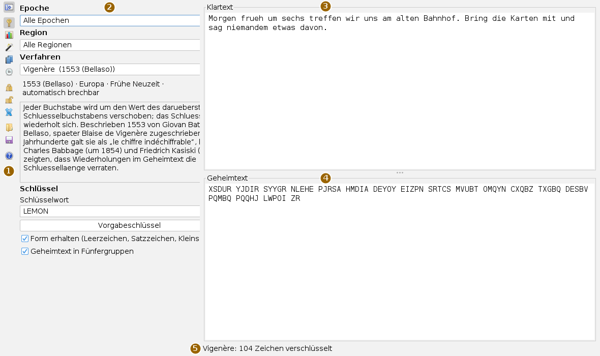
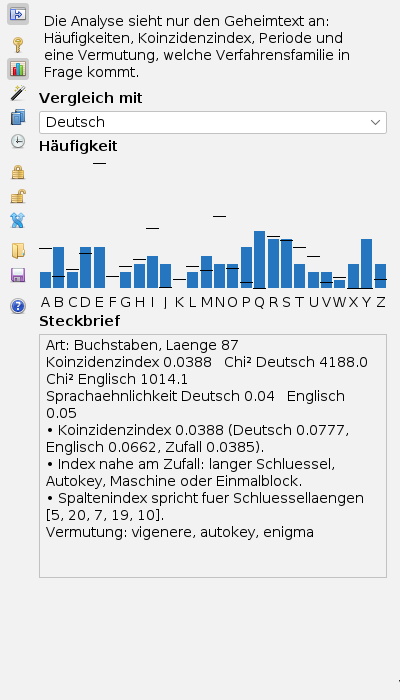
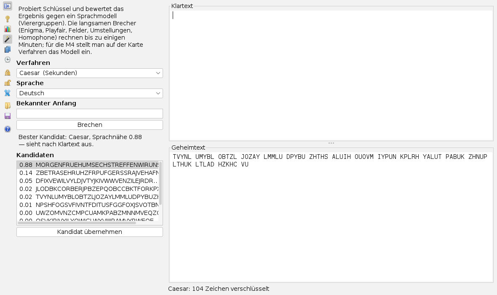
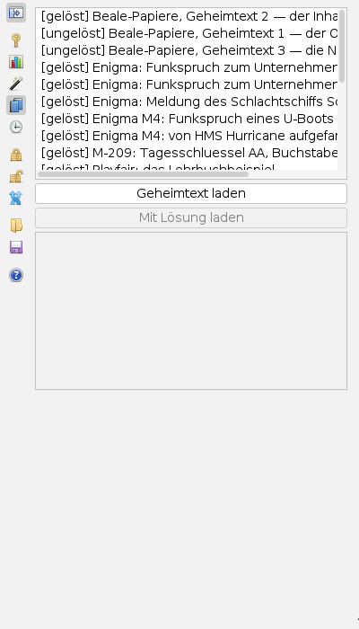
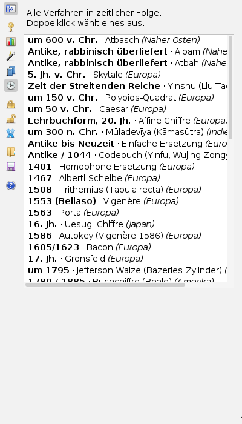

Chiffren bedienen
Bedienseite, Stand 04.10.2026. Wie man einen Text ver- und entschlüsselt, einen Geheimtext untersucht und brechen lässt und ein Stück aus der Sammlung lädt. Die Bilder sind Bildschirmfotos der App.
Das Fenster
Die App öffnet man im Menü Anwendungen mit Chiffren ver- und entschlüsseln oder mit Alt+X. Sie hat keine Dialogfenster; alles steht in einem Reiter.

Klartext und Geheimtext sind zwei Textfelder übereinander; die Trennlinie dazwischen lässt sich verschieben. Links daneben steht die Karte, die man in der Leiste gewählt hat. Der oberste Knopf der Leiste blendet die Karte aus, dann gehört die ganze Breite den Texten.
Die Leiste
Die Knöpfe tragen nur Symbole; was sie tun, steht im Tooltip, wenn man mit der Maus darauf zeigt. Die oberen fünf wählen eine Karte, die unteren lösen eine Aktion aus.
| Symbol | Tooltip | Was geschieht |
|---|---|---|
 | Werkzeugleiste ein- oder ausblenden | Karte aus- und wieder einblenden. |
 | Verfahren | Verfahren wählen, Schlüssel eintragen. |
| Analyse | Häufigkeiten und Steckbrief des Geheimtexts. | |
| Brechen | Schlüssel suchen lassen. | |
| Sammlung | Historische und Übungs-Geheimtexte laden. | |
| Chronik | Alle Verfahren in zeitlicher Folge. | |
| Verschlüsseln (Klartext → Geheimtext) | Mit Verfahren und Schlüssel der Karte Verfahren. | |
| Entschlüsseln (Geheimtext → Klartext) | Mit demselben Verfahren und Schlüssel. | |
| Klartext und Geheimtext tauschen | Die beiden Felder wechseln den Inhalt. | |
 | Text aus Datei in den Geheimtext laden | Eine Textdatei (UTF-8) landet im Geheimtext. |
| Klartext und Geheimtext speichern | Beide Texte in eine Datei, je mit einer Kopfzeile. | |
 | Hilfe zu Verfahren, Bedienung und Brechen | Die Hilfeseiten der App statt der Texte; noch einmal klicken: zurück. |
Verschlüsseln und entschlüsseln
- Karte Verfahren öffnen. Mit Epoche und Region lässt sich die Liste eingrenzen; dann das Verfahren wählen. Darunter stehen Herkunft, Beschreibung und, ob es sich automatisch brechen lässt.
- Unter Schlüssel die Felder ausfüllen, die das Verfahren braucht (bei Vigenère das Schlüsselwort, bei Caesar die Verschiebung). Vorgabeschlüssel setzt ein Beispiel ein.
- Den Text oben in den Klartext schreiben oder einfügen und Verschlüsseln drücken. Der Geheimtext erscheint unten; die Statuszeile meldet Verfahren und Zeichenzahl.
- Umgekehrt: Geheimtext unten einfügen, gleiches Verfahren und gleichen Schlüssel einstellen, Entschlüsseln.
Form erhalten lässt Leerzeichen, Satzzeichen und Kleinschreibung stehen; ohne den Haken arbeitet das Verfahren nur auf den Buchstaben. Geheimtext in Fünfergruppen schreibt den Geheimtext in der historischen Form.
Einen Geheimtext untersuchen

Die Karte Analyse sieht nur den Geheimtext an und rechnet beim Tippen mit. Die Balken zeigen, wie oft jeder Buchstabe vorkommt, die Striche, wie oft er in der unter Vergleich mit gewählten Sprache vorkäme.
Der Steckbrief nennt Länge, Koinzidenzindex, die Nähe zu Deutsch und Englisch und eine Vermutung, welche Verfahrensfamilie in Frage kommt. Liegt der Koinzidenzindex nahe am Zufall wie im Bild, spricht das für einen langen Schlüssel, eine Maschine oder einen Einmalblock; ein Index wie in der Sprache für eine einfache Ersetzung oder Umstellung.
Einen Geheimtext brechen

- Den Geheimtext unten einfügen oder aus der Sammlung laden.
- Karte Brechen: Unter Verfahren entweder Nach Vermutung der Analyse lassen oder ein Verfahren ausdrücklich wählen. Hinter dem Namen steht, wie lange der Brecher etwa rechnet.
- Sprache des vermuteten Klartexts wählen. Kennt man den Anfang des Klartexts, gehört er in Bekannter Anfang; die M-209 braucht ihn, Hill nutzt ihn.
- Brechen drücken. Lange Läufe zeigen einen Fortschritt und lassen sich abbrechen.
- Die Kandidaten stehen nach Sprachnähe sortiert. Ab 0,6 meldet die Karte „sieht nach Klartext aus“, darunter „vermutlich nicht gelöst“. Kandidat übernehmen setzt Verfahren, Schlüssel und Klartext.
Die Sprachnähe ist eine Wahrscheinlichkeit, kein Beweis. Kurze Texte lassen mehrere Lösungen zu, und ein Wert knapp über der Schwelle kann Zufall sein. Die Meldung sagt deshalb „sieht nach Klartext aus“ und nicht „gelöst“.
Nach Vermutung laufen nur die schnellen Brecher. Enigma, Playfair, die Felder, Umstellungen und homophone Ersetzungen rechnen bis zu einigen Minuten; sie laufen nur, wenn man sie ausdrücklich wählt.
Sammlung und Chronik


In der Sammlung wählt man ein Stück aus der Liste. Geheimtext laden setzt nur den Geheimtext, zum Selbstbrechen; Mit Lösung laden setzt bei gelösten Stücken auch Verfahren, Schlüssel und Klartext. In der Chronik wählt ein Doppelklick das Verfahren und öffnet die Karte Verfahren.
Was gespeichert wird
Beim Sichern des Arbeitsbereichs merkt sich die App nur das gewählte Verfahren und die offene Karte. Klartext, Geheimtext und Schlüssel landen bewusst nicht in der Sitzungsdatei. Wer die Texte behalten will, speichert sie mit dem Diskettenknopf in eine eigene Datei.
Symbole: Fugue Icons von Yusuke Kamiyamane, Lizenz CC BY 3.0.